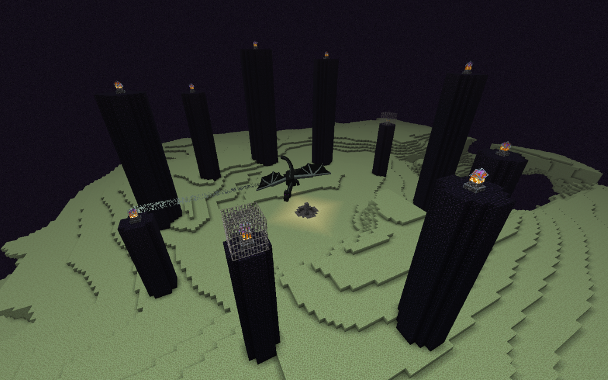
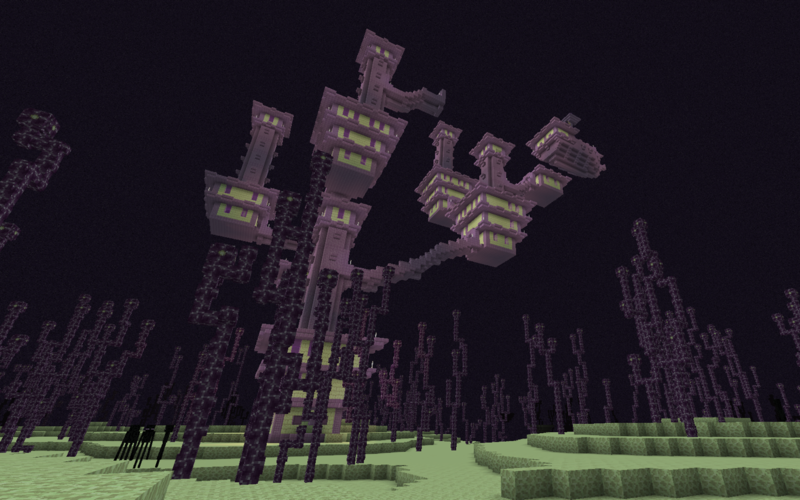

The End (česky - konec) je posledním biomem do kterého se v Minecraftu dostanete.
Nachází se zde finální boss zvaný ,,Ender Dragon".
Po jeho úspěšném zabití se můžete dostat do další části Endu, kde můžete nálezt unikátní předměty, jako Elytra.
 